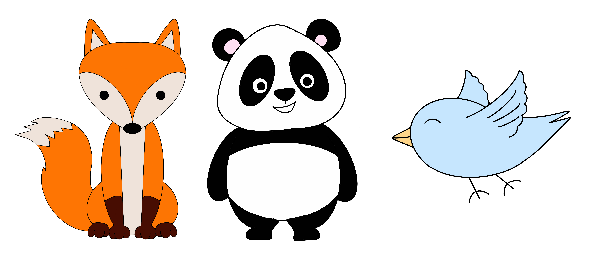
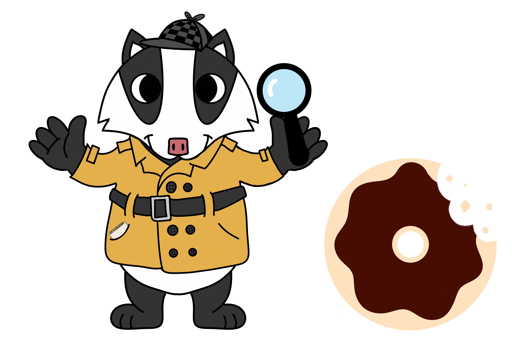

Someone ate the last donut in the box that was supposed to be split among Bird, Fox, and Panda. All three are suspects.

The three reach out to Detective Badger for help revealing the donut thief. She collects evidence surrounding the case and shares her findings below.

- Fact (True statement): “The donut was chocolate frosted.”
- Evidence
Hint.
Either Bird ate the donut or the donut was in the kitchen.Hint.
If the donut was chocolate frosted, the donut was in the kitchen this morning.Hint.
Fox ate the donut if and only if the donut had sprinkles.Hint.
The donut did not have sprinkles if it was in the kitchen this morning.
- "Who ate the donut?" Interactive App
6
studio.code.org/projects/applab/WnUtOYvHloiKe5N6V4RD_IUZVGsFxFaD2eJf2RRtSYQ
Solution.
Donut Proof Example
7
youtu.be/PdGhE0iQT9s